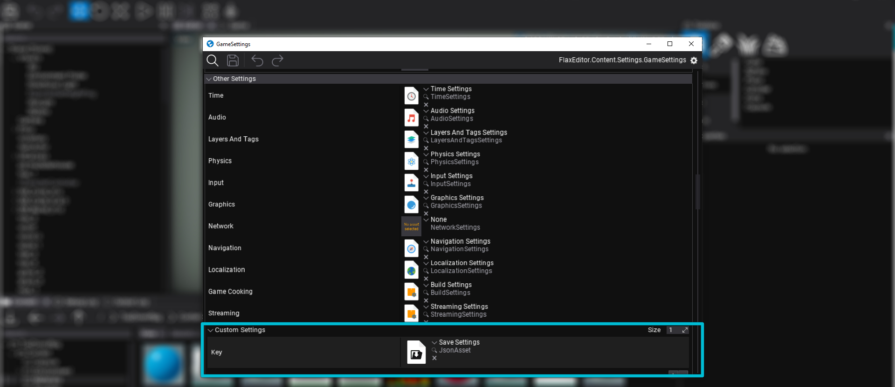

Welcome to FlaxSave
Get FlaxSave up and running in a few simple steps. This guide assumes that you already installed the plugin into your project. If not, get FlaxSave here.
Guides
If you're looking for more detailed guides, check out the Manual.
Quick Start
Save Settings
The save system uses a central FlaxSaveSettings asset to manage paths, file extensions, versioning and the auto-save configuration.
This allows you to customize properties and behaviours to your project needs, without touching a single line of code.
To create and use a save settings asset:
- In the content window,
right click > New > Flax Save > Settings - Open your projects
GameSettigs - Add the new asset to
GameSettings > Other Settings > Custom Settings

Save settings need to be linked in the GameSettings asset to take effect. This allows you to create multiple save settings assets for quickly testing different configurations, i.e. DebugSettings with shorter auto-save intervals and ReleaseSettings for the final game.
Default Settings
If you don't link any settings asset in GameSettings, FlaxSave will fall back to its default settings.
Settings Key
While Flax allows you to assign a "Key" to custom settings, FlaxSave identifies its settings by type. You can leave the key field at default or rename it however you like.
Save Actor State
The core design of FlaxSave is that every actor (and its hierarchy) should be self-contained. Each object handles its own data-serialization.
To make an object savable, you simply hook it into the SaveManager events, like this:
...
using FlaxSave;
public class SavableTransform : Script
{
public void SaveTransform(Dictionary<Guid, string> savegame)
{
// Savegame files are Json-based, so serialize the transform to json
string data = JsonSerializer.Serialize(Actor.Transform);
// Add or update the savegame entry for this object using its unique ID
savegame[ID] = data;
}
public override void OnEnable()
{
// Subscribe to the save event.
// This event is dispatched during manual or auto-save,
// when all active objects are asked to provide their save data.
SaveManager.Instance.OnSaving += SaveTransform;
}
public override void OnDisable()
{
// Don't forget to unsubscribe your methods from events!
SaveManager.Instance.OnSaving -= SaveTransform;
}
}
Detailed Examples
Check out for more detailed and advanced examples in your plugin folder
FlaxSave > Source > FlaxSaveExamples > Scripts
Load Actor State
The core design of FlaxSave is that every actor (and its hierarchy) should be self-contained. Each object handles its own data-serialization.
To make an object load it's previous state, you simply call the SaveManager api, like this:
...
using FlaxSave;
public class SavableTransform : Script
{
public override void OnEnable()
{
// Load the state from the currently loaded savegame.
// At this point the savegame should have been loaded.
string data = SaveManager.Instance.GetSaveData(ID);
if (string.IsNullOrEmpty(data))
return;
Transform savedTransform = JsonSerializer.Deserialize<Transform>(data);
Actor.Transform = savedTransform;
}
}
Detailed Examples
Check out for more detailed and advanced examples in your plugin folder
FlaxSave > Source > FlaxSaveExamples > Scripts
Saving & Loading to Disk
To trigger the actual file operations, you simply call the SaveManager api. The system handles the heavy lifting, like file I/O and threading, behind the scenes.
This script demonstrates how dispatch save and load actions via key press.
...
using FlaxSave;
/// <summary>Example for quick-save and quick-load setup</summary>
public class Dispatch : Script
{
private SaveManager saveManager => SaveManager.Instance;
/// <inheritdoc/>
public override void OnUpdate()
{
// Saves the current game state
if (Input.GetKeyDown(KeyboardKeys.F5))
saveManager.RequestGameSave();
// Loads the latest savegame.
// Savegames have to be loaded before actor initilization.
if (Input.GetKeyDown(KeyboardKeys.F6))
saveManager.RequestGameLoad(saveManager.SaveMetas[^1].SaveName);
}
}
The SaveMetas List
The SaveMetas list is ordered chronologically. SaveMetas[0] is the oldest save, while SaveMetas[^1] (or SaveMetas.Last()) is always the newest savegame.
Good to know
Core Concepts
To get the most out of this quick start guide, it helps to understand the three pillars of the system
- The Save Manager Is the central hub. Use this to trigger saves, loads, read data and listen to global events.
- Save Settings The editor-configured settings that are used by the save system.
- Metadata Is how the system identifies and organizes save files for you to create menus around it.
Timing is Everything
Savegames should generally be loaded before actor initialization (i.e. before a level transition or before OnStart).
If you load a save while a level is already running, you need to ensure your scripts are listening to the OnLoaded event to update their states.
Threading & Safety
FlaxSave is asynchronous by design. Most operations happen on a background thread, to prevent stuttering and frame drops during gameplay.
- Always remember When gathering data in OnSaving, it's ok to read from the scene, but don't modify it.
- Use OnSaved and OnLoaded for UI updates and other scene modifications. Also, consider using InvokeOnSaved, InvokeOnLoaded and InvokeOnDeleted for one-time updates.